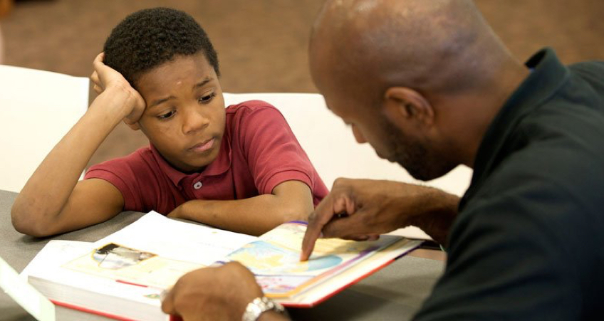

I believed climate change and global warming were the same thing! I wasn’t alone. More than half the population in the United States of America believe that global warming and climate change are the same thing.
Global warming is the increase in global temperature on earth over an extended period of time. This is a natural occurrence. Our planet earth will experience periods of time where the temperature may be hotter than average or cooler than average.
However, the carbon footprint left by the human species has driven the temperature to rise at a faster pace, leading to unwelcomed changes in our environment. Some of the changes include rising sea levels and more frequent natural disasters.
These changes and alterations of weather patterns on our earth are called climate change. Climate change encompasses global warming but refers to a much broader spectrum of reactions on earth.
Elementary and Middle schools are just barely scratching the surface to teach their students about Climate Change. Most parents and guardians get their information about Climate change from the news and media, which can sometimes spread false information and "fake news."
Children haven't had many reliable resources to learn about climate change. In schools, children only receive between 1-4 hours of education about climate change for the entire school year. In addition, children are not experiencing an engaging discussion. Rather, most teachers assign their students to read long, monotonous paragraphs and decipher charts of data in the chapters of outdated textbooks.

Another obstacle that is obstructing child science education is the most important asset to a school: the teacher. Many teachers never learned about climate change when they were in high school and when they were acquiring their degrees in colleges or universities. Climate change was not as pressing of a topic because we hadn’t seen the changes in our weather patterns yet. We had only theories and hypotheses but the general public were not sure if scientists had met to an agreement about the reality of climate change.
On another hand, teachers have their own biases. Some feel a religious opposition to these topics because they hold a belief that their God had brought upon these natural disasters and environmental changes for a purpose. It would be a violation to take action against the choices of their God. Other teachers hold political and economic biases.
For example, our current president Donald Trump has denied the science of climate change in many instances, calling it a “con job” and a “myth,” and even suggesting the concept was “created by and for the Chinese in order to make U.S. manufacturing non-competitive.”
For long-term sustained action, adults and children with these strong oppositions need hope. Especially those with strong religious backgrounds. They need love, encouragement, and that sense of shared community of being in this together. It’s not ironic that faithful communities often provide exactly that.
The next steps can be viewed here